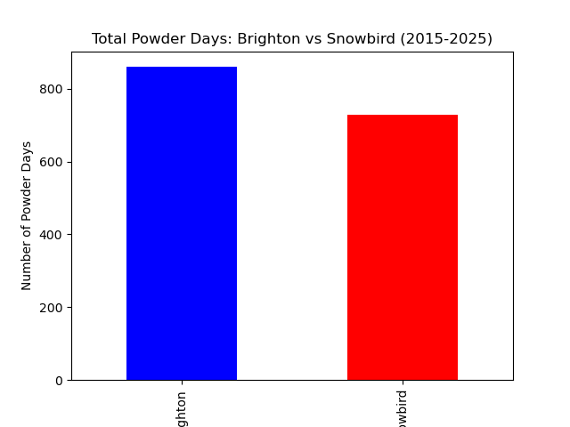
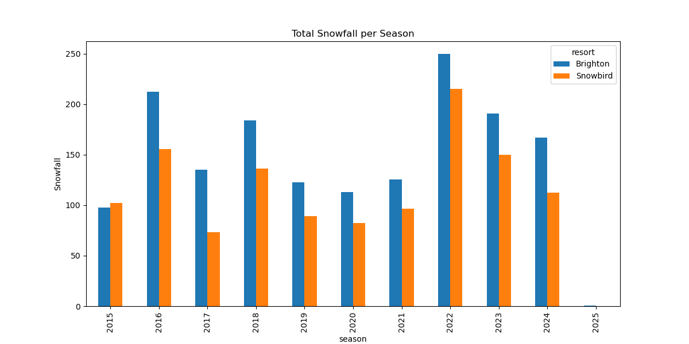
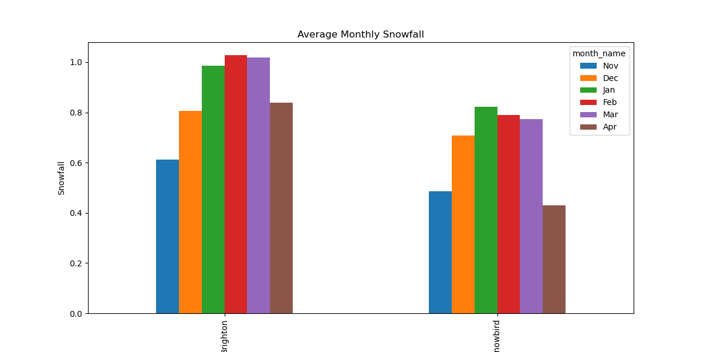

Introduction
Living in Utah means that having something to do in the winter is essential. For many people, that activity is skiing or snowboarding — but it can be difficult to decide which resort will give you the most snow. For this post, I wanted to discover which resort would be better to get a season pass to, based solely on the amount of snow they get.
Key Question: Over the last ten seasons, did Brighton or Snowbird have better snow?
To answer this, I extracted historical weather data from Open-Meteo's Historical Weather API for both resorts — making sure to pick two resorts in different canyons — and narrowed the data down to winter months from 2015–2025.
This was determined to be ethical data usage because the source encourages use and citation of their API to encourage collaboration in the scientific community.
Data Acquisition
I used the Open-Meteo archive endpoint, which allows you to request daily and hourly weather variables from a specific latitude and longitude.
For each resort I converted hourly snow depth to daily max snow depth (hourly snow depth was the only available option), merged that with the daily dates, filtered to winter months, and labeled each row with the resort name.
Season was defined as the year of November–April, so November 2015 – April 2016 is the 2015 season. I then looked at days with 6 or more inches of snow and defined them as powder days. Since the API provides snowfall in inches, this was straightforward.
Finally I calculated snowfall per season (sum of seasonal snowfall) and monthly snowfall averages between the two resorts.
The full Python code used to acquire and clean the data is available here: github.com/lindsayslem/Snow-comparison
Exploratory Data Analysis

From this, we can see that Brighton has had more total powder days in the last 10 years.

This graph depicts that over the last 10 years, Brighton has had more total seasonal snowfall than Snowbird.

Brighton also shows a higher average monthly snowfall across the season. It was interesting to find that Brighton outperformed Snowbird in all three categories.
Conclusion
Based on 10 winters of historical weather data, Brighton consistently outperformed Snowbird in all categories — powder days, total seasonal snowfall, and monthly averages. Although Snowbird is known for steeper terrain and spring riding, Brighton objectively gets more snow on average, making it the better choice if snowfall is the deciding factor for a season pass.